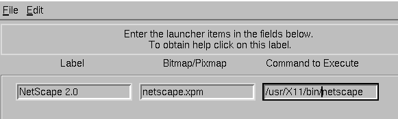
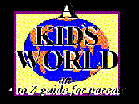

Trax
Trax
Welcome fellow intrepid surfing type dudes! Well, last month was a slow one surfing wise. I've been hard at work trying to fix several problems which croped up while doing last issues' Web and Caldera articles. Let's see; Perl quit working; my e-mail system had a problem; right smack in the middle of working on that my ISP underwent some major revisions which took time to complete, and
My Netscape trial period also had to expire.
When it rains.......
I want to give a big hearty welcome to Laurie who is doing a monthly column devoted to Q&A.
Big Tip Laurie: BACKUP your machine!! Often.
For this months Cool Sites, I plugged my grandsons into the keyboard and they found a place to visit and talk about their favorite video games. I had to ummm...well, you know!...HEY! they would've hogged my computer all night! Anyway, Cool Sites is devoted to children and video game stuff for both big and small kids. Enjoy.
Nope, not another service provider or network thingy; TkNet is a utility to manage a PPP/SLIP dialup account with the emhasis on ease of use and maintainability.
Is TkNet easy to use? Yes. I was able to set the program up for PPP simply by entering the name of the script file I normally use as root whenever I want to dial up the ol'ISP. E-Mail routines can be configured as well. TkNet includes an application launcher which is also easy to configure.
The Launcher Setup

One minor complaint: I don't 'get' the QUIT button. Not only does it Quit TkNet, but also kills the ppp daemon. Hmmm...thought killing the ppp daemon was the job of the Disconnect button.
Got kids? Yep, your superhero web surfer type dude has grandchildren of the male variety and of course, the toys are still comming into our house! (You know, I may never run out of excuses to buy a new toy!) Anyway, webhead gramps has a Sega game machine and the boys got to tune into the Sega web page. Check out Sega Online
Check out for that perfect game.
SoulPatch is not strictly for kids; SoulPatch has something for both parents and children.
Here is some eye candy from SoulPatchs' home page.
Check out the 'scoop' on a video movie.
Books, video and CD news for kids 
SoulPatch can be reached at WWW.SOULPATCH.COM
3DO. Gotta get this machine. Check out 3DO's home page and you can find out what makes this a 'must have' toy. MPEG video, 3-D video, and surround sound all make the other game machines seem a little flat. 3DO was founded in 1994 and is the largest software development company focusing on 32/64 bit programing. I also love the ability to download video clips of Blade Force. WOW. Too way cool game.
Speaking of games, check out the games price difference between any system and 3DO. 3DO prices are a lot cheaper, sometimes $18.00 cheaper!
Maybe I don't have to buy the machine, maybe I can just buy the software and pop it into the computers CD-ROM. Huh? Has Ed spent too many nights staring at the screen? Finally unable to tell the televisions' remote from the mouse? Nope! Check out the 3DO web site and find out what I'm talking about.
Turtle Trax
Seems like you can't talk about kids and computers without talking about education. Stumbling around cyberspace, the boys found this way cool site about Marine Turtles. Turtle Trax, located on the island of Maui Hi, is devoted to marine turtles. Drop in somethime and say howdy.
From turtles to...lions, tigers and .... Next stop on the cybersafari turned out to contain lions and tigers. (no bears) Want more? Check out Cat Tales, the Endangered Species Conservation Park located in Spokane Washington.
BTW: It's not polite to say "here kitty, kitty" to a bob cat.
Lets' see, we have visited Mars, Venus and Jupiter. Dived 20,000 legueas under the sea and played with turtles. Visited some lions, tigers and lepards. Going to the Rain Forest next month, care to come along?
Ciao bella